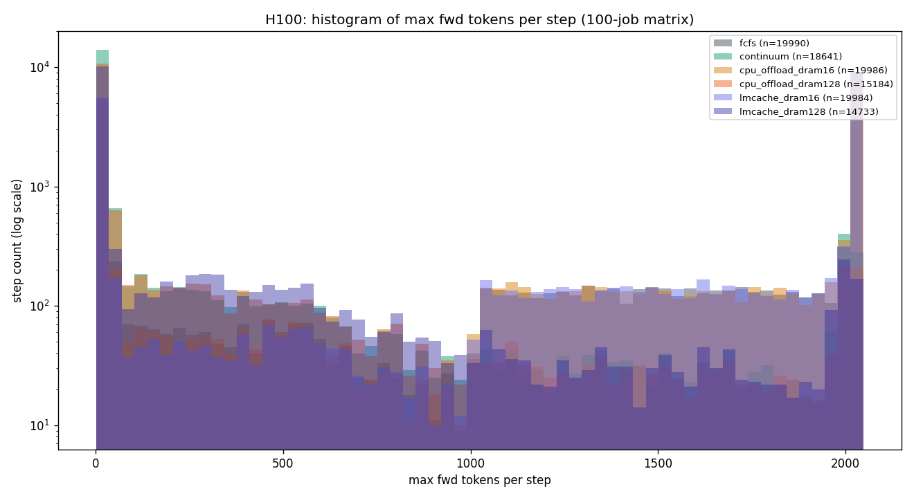
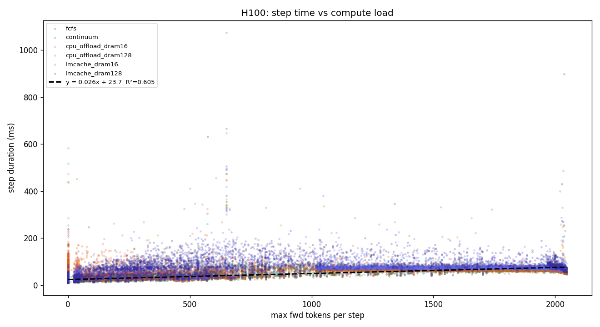
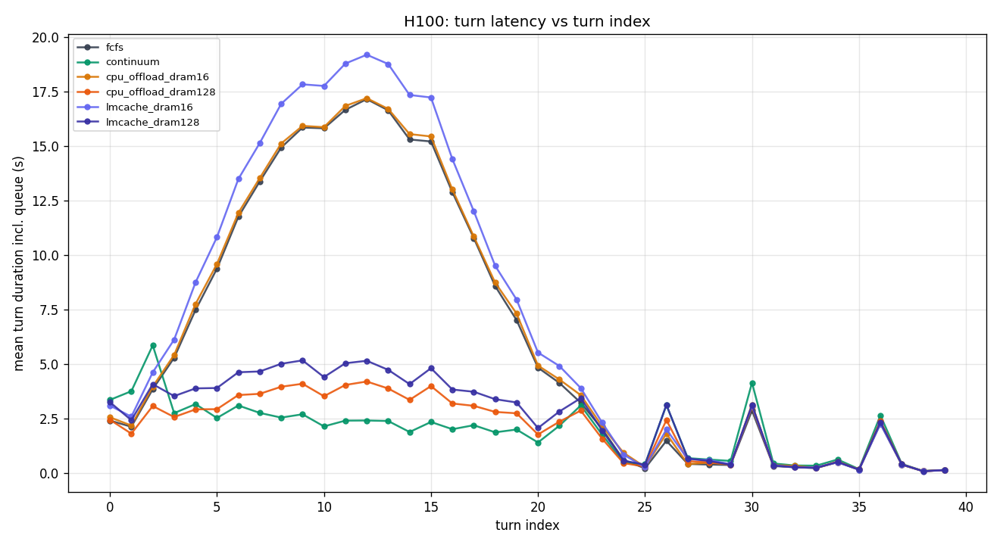
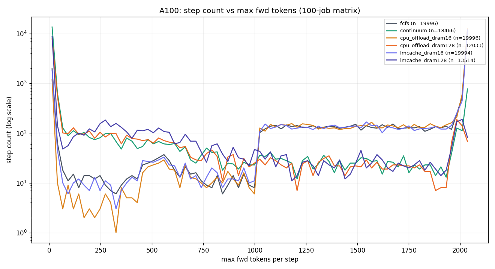
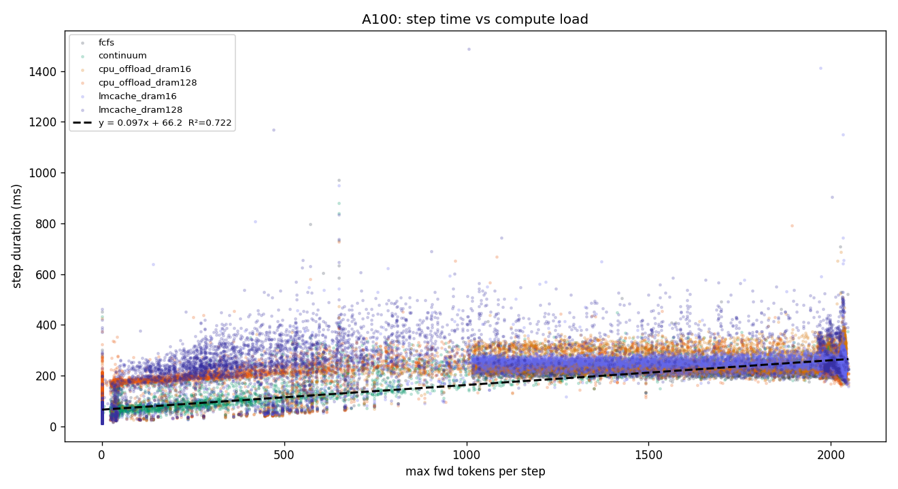
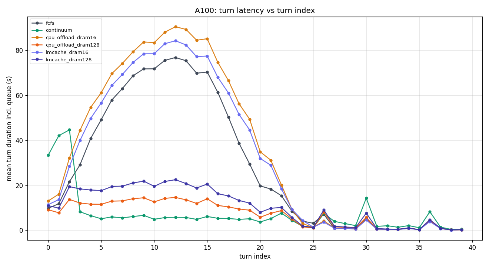
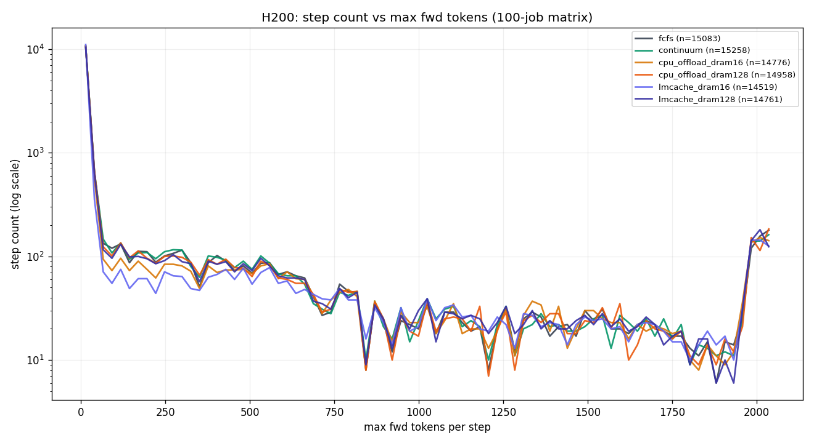
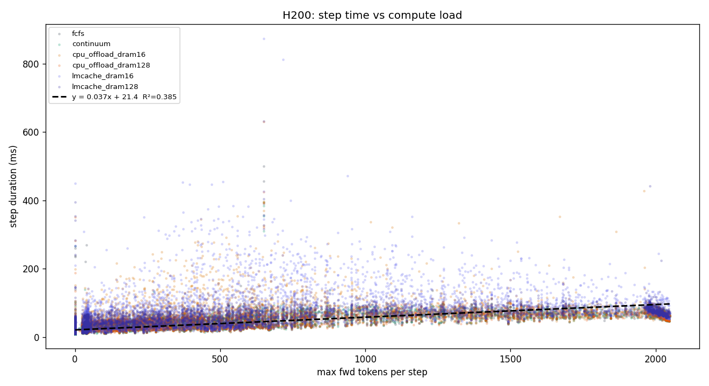
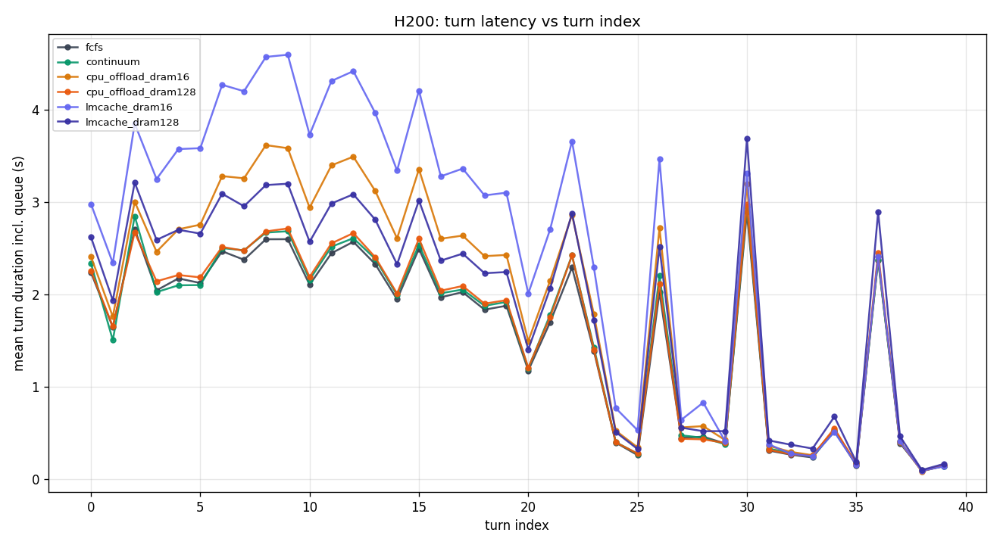

72-run experiment: 3 GPUs × 6 policy variants × 4 JPS arrival rates × 100 SWE-smith trajectories. Each trajectory replayed token-by-token via V1 LogitsProcessor forced decoding + 1 s synthesized tool-exec delay between turns.
Hung-Chun Lin · Georgia Tech
| GPU | VRAM | KV Cache Tokens (16k ctx) | Partition |
|---|---|---|---|
| H100 80GB HBM3 | 80 GB | ~458K | PACE gpu-h100 |
| A100 PCIE 40GB | 40 GB | ~90K | PACE gpu-a100 |
| H200 141GB HBM3e | 141 GB | ~825K | PACE gpu-h200 |
| Field | Value |
|---|---|
| Model | meta-llama/Llama-3.1-8B-Instruct (14.99 GB, bfloat16) |
| Dataset | princeton-nlp/SWE-smith-trajectories — 100 curated trajectories, mean 17.9 turns/job, median 6945 input / 30 output tokens per turn (highly prefix-cache-friendly) |
| Tool | Share | Tool | Share |
|---|---|---|---|
cd | 26% | submit | 11% |
editor_view | 21% | find | 6% |
editor_create | 13% | rm | 5% |
editor_str_replace | 12% | grep | 4% |
| others | 2% | ||
Each SWE-smith trajectory is an OpenAI-format chat log: a system prompt, the issue description as the user message, and alternating assistant / tool turns. Below is an abridged view of instance_id=astropy__astropy-12907 showing the first two turns.
{
"instance_id": "astropy__astropy-12907",
"messages": [
{"role": "system",
"content": "You are a SWE agent. Use the tools to explore the repo and fix the issue…"},
{"role": "user",
"content": "<issue>Modeling's `separability_matrix` does not compute separability correctly for nested CompoundModels</issue><repo>astropy/astropy</repo>"},
// turn 1 — explore
{"role": "assistant",
"content": "Let me look at the modeling package.",
"tool_calls": [{"id": "c1", "type": "function",
"function": {"name": "cd", "arguments": "{\"path\": \"astropy/modeling\"}"}}]},
{"role": "tool", "tool_call_id": "c1", "content": "/astropy/modeling"},
// turn 2 — read the suspect file
{"role": "assistant",
"content": "Opening separable.py to inspect _separable().",
"tool_calls": [{"id": "c2", "type": "function",
"function": {"name": "editor_view", "arguments": "{\"path\": \"separable.py\", \"view_range\": [1, 120]}"}}]},
{"role": "tool", "tool_call_id": "c2",
"content": "def _separable(transform): … # ~115 lines of source"},
// … 15 more turns (editor_str_replace, editor_view, editor_str_replace, submit) …
]
}tool_calls field is OpenAI-native but Continuum's pin estimator classifies by parsing a trailing ```bash\n<tool_name>\n``` block in the assistant's content. Our preprocessor synthesizes that block from tool_calls[0].function.name before tokenization, so cd becomes "Let me look at the modeling package.\n```bash\ncd\n```". See §2.1.| Policy variant | KV strategy | External tier |
|---|---|---|
fcfs | V1 FCFS admission | — |
continuum | Pin held-KV for 2 s TTL if estimated tool-exec ≤ threshold | — |
cpu_offload_dram16 | SimpleCPUOffloadConnector | 16 GB DRAM |
cpu_offload_dram128 | SimpleCPUOffloadConnector | 128 GB DRAM |
lmcache_dram16 | LMCacheConnectorV1 | 16 GB DRAM |
lmcache_dram128 | LMCacheConnectorV1 | 128 GB DRAM |
Jobs arrive as a Poisson process. JPS (jobs per second) values: 1, 3, 6, 10. Each job runs its full ~18-turn trajectory; between turns a 1-second synthesized tool-exec delay is inserted to emulate real agent loop back-pressure.
Every turn's output is pre-recorded in the trajectory. To replay deterministically, we mask all logits except the target token via a custom V1 LogitsProcessor registered at engine startup.
class ForceTokensLogitsProcessor(LogitsProcessor):
def update_state(self, batch_update):
# Track (forced_tokens, output_tok_ids_ref) per batch idx.
for idx, params, _, output_ids in batch_update.added:
forced = (params.extra_args or {}).get("forced_tokens")
if forced:
self.per_req[idx] = (list(forced), output_ids)
def apply(self, logits):
for idx, (targets, output_ids) in self.per_req.items():
pos = len(output_ids) # reference → auto-updates
if pos < len(targets):
logits[idx, :] = float("-inf")
logits[idx, targets[pos]] = 0.0
return logits
output_ids passed in BatchUpdate is a live reference — it auto-advances as each request generates, so apply() always sees the current decode position without bookkeeping.Continuum's pin estimator parses assistant output for a bash code block to classify tool type. Raw SWE-smith trajectories use OpenAI function-calling (tool_calls field), not bash blocks, so a preprocessor appends a synthetic ```bash\n<tool_name>\n``` block to each assistant turn's output_text before tokenization.
Each run emits two JSONL traces:
sched_trace.<policy>.steps.jsonl — one line per schedule() invocation: running/waiting queues, pinned jobs, free/used/pinned blocks, CPU-tier free/total, max_num_scheduled_tokens budget, step_decision categories (new/resumed/running/preempted).sched_trace.<policy>.requests.jsonl — per-step full request state: num_prompt_tokens, num_cached_tokens, num_computed_tokens, spec_tokens_count, job_id, turn_idx, decoded output_tail, …In addition, a prefix_cache_lookup event records (local_hit, external_hit, total_prompt) at each request's first schedule, splitting vLLM prefix-cache hits from connector-provided hits (CPUOffload / LMCache).
Below: mean total turn duration per job including queue wait, across 100 jobs × ~18 turns. Lower = better. Bold highlights per-row winner.
| JPS | fcfs | continuum | cpu_off-16G | cpu_off-128G | lmcache-16G | lmcache-128G |
|---|---|---|---|---|---|---|
| 1 | 41.0 | 41.3 | 50.5 | 41.6 | 57.9 | 53.1 |
| 3 | 232.9 | 69.0 | 232.3 | 79.8 | 260.6 | 96.3 |
| 6 | 276.0 | 75.8 | 268.4 | 85.3 | 297.5 | 105.0 |
| 10 | 281.0 | 79.1 | 290.3 | 91.8 | 319.4 | 105.7 |
| JPS | fcfs | continuum | cpu_off-16G | cpu_off-128G | lmcache-16G | lmcache-128G |
|---|---|---|---|---|---|---|
| 1 | 707.7 | 188.4 | 959.2 | 202.8 | 680.9 | 256.9 |
| 3 | 1086.5 | 231.4 | 1057.2 | 234.2 | 1144.3 | 466.5 |
| 6 | 966.3 | 233.3 | 1057.3 | 241.6 | 1168.3 | 310.4 |
| 10 | 895.7 | 238.0 | 1419.2 | 240.9 | 1159.0 | 292.8 |
| JPS | fcfs | continuum | cpu_off-16G | cpu_off-128G | lmcache-16G | lmcache-128G |
|---|---|---|---|---|---|---|
| 1 | 39.6 | 40.1 | 45.7 | 37.2 | 53.1 | 47.3 |
| 3 | 58.3 | 57.2 | 69.3 | 61.6 | 84.3 | 61.3 |
| 6 | 62.1 | 65.0 | 76.6 | 64.7 | 97.0 | 66.5 |
| 10 | 66.1 | 66.3 | 80.8 | 67.1 | 95.6 | 85.6 |

max_num_scheduled_tokens. Continuum and cpu_offload_128G show tighter distributions; cpu_offload_16G and lmcache_16G have heavier right tails due to prefill retries after eviction.
y = 0.0258·x + 23.7, R² = 0.605. Interpretation: each additional token costs ~26 μs of step time; the 24 ms intercept is fixed per-step overhead (kernel launch + scheduler + Python dispatch).


y = 0.0973·x + 66.2 ms, R² = 0.722. A100 is 3.8× slower per token than H100 (26 μs → 97 μs) and has 2.8× higher per-step overhead (24 → 66 ms) — reflecting slower PCIe 4.0 + weaker TensorCore throughput.

lmcache_16G is the only outlier — deliberately tight DRAM forces external-cache thrash even when GPU KV is plentiful.
y = 0.0371·x + 21.4 ms, R² = 0.385. Notably lower R² than H100/A100 — compute is so fast that per-step variance is dominated by non-compute factors (scheduler overhead, I/O, Python GIL), not max fwd tokens. Per-token cost (37 μs) is 1.4× H100's, but intercept (21 ms) is actually lower — H200's kernel launch overhead is smaller.
lmcache_16G and cpu_offload_16G (which still suffer from forced eviction). Confirms that policy matters only when KV pressure exists.Fitting step_duration = slope·max_fwd_tokens + intercept across all policies on each GPU:
| GPU | n (steps) | slope (μs/token) | intercept (ms) | R² | Interpretation |
|---|---|---|---|---|---|
| H100 | 108,518 | 25.8 | 23.7 | 0.605 | Compute-bound: throughput predicts time well. |
| A100 | 103,999 | 97.3 | 66.2 | 0.722 | Strongest linear fit — compute fully saturates kernels. |
| H200 | 89,355 | 37.1 | 21.4 | 0.385 | Compute too fast — overhead dominates step time. |
H100 JPS ≥ 3: 3.3–3.7× faster than FCFS. A100 JPS ≥ 3: 3.7–4.7× faster. The gain comes from pinning held-KV for 2 s, which lets the next turn of a job hit prefix cache at ~98% instead of re-prefilling 6–8 K tokens.
When DRAM is abundant (≥ working-set size), SimpleCPUOffloadConnector achieves 80–90% of Continuum's latency without any custom scheduling logic. It even surpasses Continuum on H200 (where DRAM transfer cost is trivial vs. compute). However, it cannot replace Continuum on A100 at JPS = 10 (240 s vs 238 s — tied) because PCIe 4.0 becomes the bottleneck.
cpu_offload_16G and lmcache_16G consistently underperform FCFS (which has no external tier) on H100 and A100 at high JPS. LRU thrashes: KV is offloaded then immediately evicted before reuse, paying transfer cost both ways with no benefit. Rule of thumb: DRAM must exceed the sum of all concurrent jobs' peak KV, not average.
With 141 GB HBM3e, the entire 100-job working set fits in VRAM. All policies converge within ±8% of FCFS. Buying H200 is effectively buying insensitivity to scheduler bugs.
vllm/v1/core/sched/scheduler.py:1021 asserts sum(scheduled_*_req_ids) ≤ len(self.running). Under extreme contention the invariant temporarily breaks. Downgraded to a warning; no downstream effect observed.~/.cache/vllm, which overflows PACE's 20 GB home quota after ~5 runs. Root cause: XDG_CACHE_HOME alone is insufficient — vllm hardcodes Path.home() / '.cache' / 'vllm'. Fix: export VLLM_CACHE_ROOT=<scratch-dir>/vllm alongside XDG_CACHE_HOME.cpu_kv_cache_size_bytes; actual code reads cpu_bytes_to_use_per_rank. Using the wrong key silently caps CPU KV at 0, forcing GPU-only behavior.--gres=gpu:h100:1 or :a100:1 explicitly.find/grep/python) span 0.01 s (cd) to 60 s (pytest). A per-tool-type distribution would test Continuum's dynamic pin-TTL more faithfully.Every run produces per-step JSONL traces (step_snapshot + step_decision + prefix_cache_lookup). Load them into the interactive scheduler trace viewer to inspect individual steps, prefill/decode phases, KV block allocation, pin state, and admission limits.
~/Project/Agentic_KVCache_management/sched_trace_viewer.html
Open in browser, then load sched_trace.<policy>.steps.jsonl + .requests.jsonl from any run directory under results/matrix_100job_{h100,a100,h200}/<policy>_jps<N>/.
[prefill:Nb(Mt), Tt total, P% cached, fwd:Xt]tok:X/Y with admission-limit reason badges (tok-budget, kv-insuf, max-seqs)hit:N/M(P%) with local/external split when connector is present